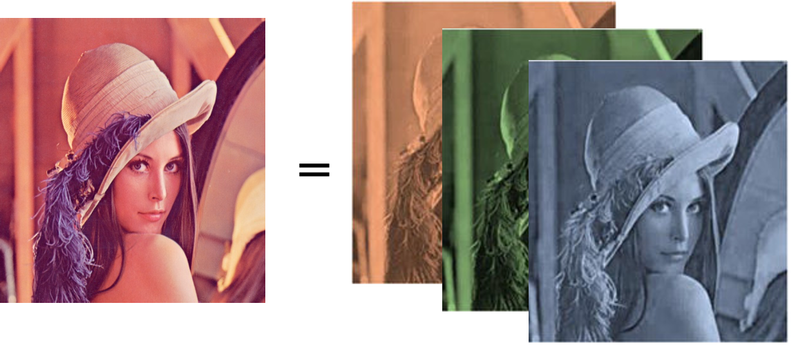

Modelling Coloured Images
Extending generative models to the full-colour spectrum
This post is presented in noteworthy - the journal blog.
Hi everybody! Today, we will continue the series about autoregressive models.
Summary
- Autoregressive models — PixelCNN
- Modelling coloured images
- PixelCNN’s blind spot in the receptive field
- Fixing the blind spot — Gated PixelCNN
- Conditional generation with Gated PixelCNN
- Gated PixelCNN with cropped convolutions
- Improving performance — PixelCNN++
- Improving sampling time — Fast PixelCNN++
- Using attention mechanisms — PixelSNAIL
- Generating Diverse High-Fidelity Images — VQ-VAE 2
For each topic, we implemented the models that are available in this repository.
In our previous post, we described an Autoregressive model for grayscale images, which only have one channel. In this post, we will talk about how to model images with multiples channels, such as RGB images. Let’s start!
The code for this topic can be found in this link.
Introduction
As we discussed in our previous post, autoregressive generative models generate data from the product of conditional distributions, meaning that they depend on the previous pixels. So, to train the PixelCNN, we need to impose an ordering on the pixels of the generated image (e.g., from top to bottom and from left to right). To hide “future” pixels in convolutional operations, we mask the convolutional layers to ignore the information coming after the already predicted pixels. The first layer of the model should not have access to the pixel of interest of the input image, so we zero out the central pixel in the mask (we call this Mask A). But in the subsequent layers, the central pixel in the mask is already ignoring the pixel of interest of the input image, so it shouldn’t be zeroed out, so we use a Mask B. When dealing with images with more than one channel, such as coloured images which have three colour channels, which masks should we be using?
Coloured Images
Coloured images are composed of three channels, Red, Green and Blue (RGB). The different colour channels can also be called sub-pixels. Each sub-pixel is not independent of the others as they compose a congruent image when combined. It is, therefore, necessary to order the sub-pixels so that we can process them sequentially and account for previous sub-pixels when predicting the next one, just as we do for the pixels. The masks need to be constructed to ensure that the prediction of a pixel is not a function of its input value.

Following the original paper, we choose to order the sub-pixels from R → G → B. In the first convolutional layer, we use Mask A where the R channel will have only access to the information of the previous pixels, which we call context, the G channel will have access to the context and the R channel, and finally, the B channel will have access to the context and both R and G channel. In the following convolutional layers, the central pixel of the previous convolutional layer has not ‘seen’ the input’s central pixel. So, the central sub-pixel does not need to be zeroed out. This means that in Mask B, the R channel has access to the context and the previous layer’s R channel. The G channel has access to the context plus the R and G channel and the B channel will have access to the context and the three channels.
Here we present a snippet showing how to build the masks for images with more than one channel. When the mask is connecting a channel of the current layer (i) that is a later order channel than the previous layer channel (j) and we zero out the central pixel. For mask A, we also zero out the central pixel when the current layer is connecting the same channel in the previous layer.
The network architecture we used is similar to the one presented for one-channel generative models, following Oord et al. 2016 implementation with 15 residual blocks and was presented on our first blog post.
Inference
When we are inferring coloured images, we have to predict three times more values than for one-channel images. This makes training the model more challenging. Here we trained our PixelCNN using the CIFAR10 dataset, so following Andrej Karpathy’s recipe for training neural networks, we started by overfitting the model to the first two training set images.
So far, so good. After 10 epochs the model had already learned to mimic exactly the training set. But when we try to predict the next pixels of an occluded image that the model hasn’t seen yet, it does a poor job of completing the picture. This is expected as the model only learned to replicate the two examples it was shown.
Next, we trained our PixelCNN for 20 epochs using 50000 training images example to make our model learn the natural images.
Now our results were less than brilliant. Despite generating interesting landscapes, they don’t seem to be learning the structure of the natural images they were trained on.
In future posts, we are going to explore reasons behind the ineffectiveness — like the receptive field’s blind spot, and we are going to learn new techniques to improve on the quality of the generated images. Until then, we can simplify the problem by quantising the CIFAR10 images from their original 256 intensity values per sub-pixel to just 8 intensity values per sub-pixel. We trained the same model for 20 epochs and show how the generated image is evolving along epochs.

The images generated in the final epochs already has a natural combination of colours. It also does not look like images in the training data, so it is learning the data manifold distribution. We can now see what images the model generates and how it predicts occluded images, just as in the previous case.
Conclusion
It’s a challenge to train a PixelCNN to predict coloured figures. Although reducing the number of pixel intensity levels from 256 to 8 improved the results, the generated images were still not ideal. We briefly mentioned during the text that the performance could be improved by fixing the blind spot problem. So in the next two blog post, we will first introduce what is the blind spot and then we will show how we can fix it. So, stay tuned!
References
- http://bjlkeng.github.io/posts/pixelcnn/
- https://github.com/bjlkeng/sandbox/blob/master/notebooks/pixel_cnn/pixelcnn_helpers.py
- http://sergeiturukin.com/2017/02/22/pixelcnn.html
- https://github.com/rampage644/wavenet/blob/master/wavenet/models.py
- https://github.com/tensorflow/magenta/blob/master/magenta/reviews/pixelrnn.md